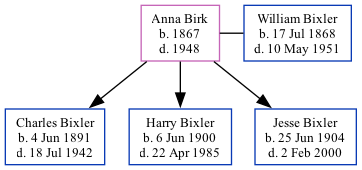

Anna S Bixler (née Birk) 1867 - 1948
[ Home ] | [ Calendar ] | [ Surnames Index ] | [ Family History ]Anna Birk, the wife of William Andrew Bixler (the third cousin three-times-removed on the mother's side of Nigel Horne), was born in Indiana, USA in 18671 and married William (with whom she had 3 children: Charles Edward, Harry Emerson and Jesse Clarence) in Allen, Indiana on Feb 25, 18912.
Throughout her life, Anna lived in several places: in Washington, Allen, Indiana on Apr 15, 19103; in Adams, Indiana on Jan 1, 19201; in Fort Wayne, Allen, Indiana on Apr 1, 19304; and in Milford, Lagrange, Indiana on Apr 1, 19405.
She died in 1948 and was buried in Fort Wayne, Allen, Indiana after 1948.
Children
- Charles Edward was born on Jun 4, 1891
- Harry Emerson was born on Jun 6, 1900
- Jesse Clarence was born on Jun 25, 1904
Citations
- US Census 1920 - Findmypast (was age 52 and the wife of the head of the household)
- United States Marriages - Findmypast
- US Census 1910 - Findmypast (was age 42 and the wife of the head of the household)
- US Census 1930 - Findmypast (was age 62 and the wife of the head of the household)
- US Census 1940 - Findmypast (was age 72 and the wife of the head of the household)
Media
William Bixler - Anna - headstone

Anna Birk; Charles, Harry, William, Jesse Bixler

United States Marriages - FS/MAR/31737949/2
United States Marriages - R_1072328605/2
US Census 1930 - USC/1930/004950593/00231/006
US Census 1940 - USC/1940/1457898531
Family Tree
Generated by Ged2Site. Last updated on Jul 20, 2025